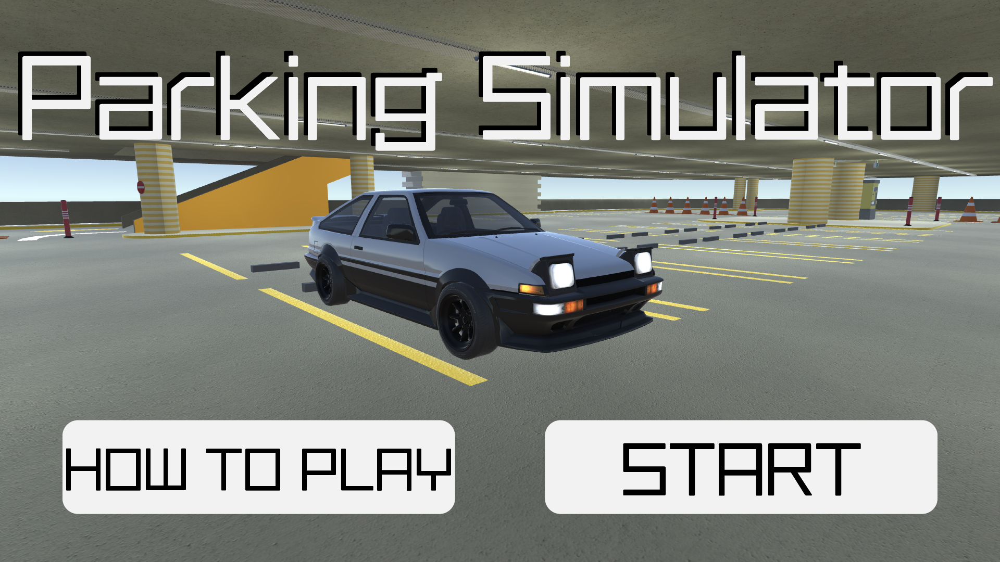
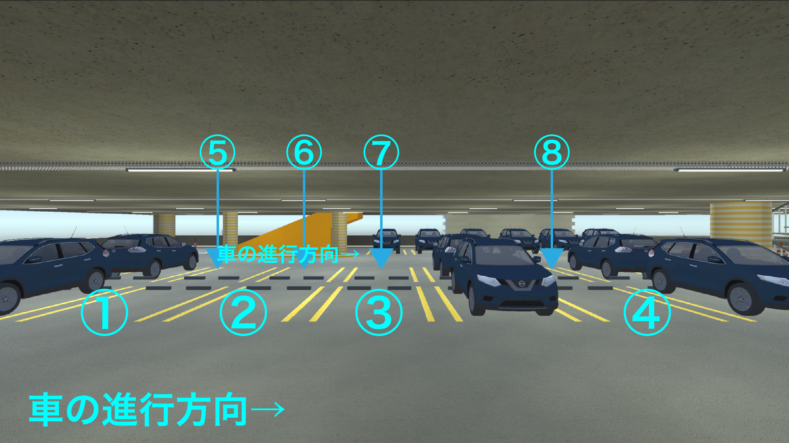

概要
「1~2分で遊べるwebGLゲーム」がテーマの作品として制作しました。
リアルな駐車の練習ゲームを目指して、実際の運転にできるだけ近づくように頑張りました。
制作期間
2020年12月〜2021年1月
使用技術
Unity(C#) / illustrator / AfterEffects
制作背景・コンセプト
Unityを用いたインタラクティブ作品の制作を目的とした授業内にて制作しました。
自分が免許を取り立てで駐車が苦手なので、練習になればと思いこのコンセプトにしました。
既存の類似ゲームはほとんどが上空や後方の三人称視点であったため、運転席の視点からミラーや後方確認を駆使する実際に近い感覚でのゲームを目指しました。
駐車スペースに対しての位置や傾きの正確さ、車体の衝突の回数で点数が決まります。
遊び方・工夫点
遊び方を説明したプレゼン動画です。
様々な状況パターンを用意したので、練習したいシチュエーションでプレイすることができます。
